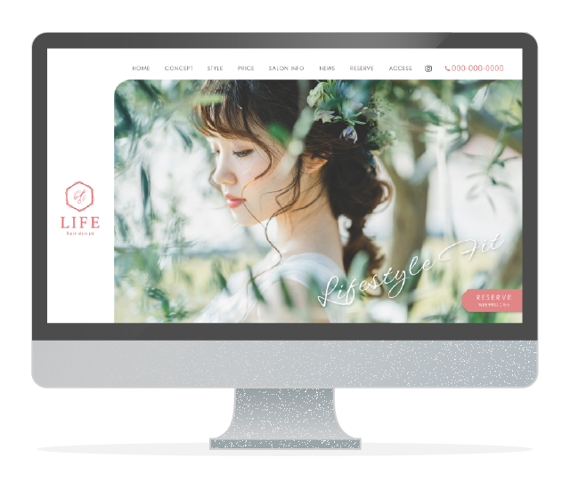
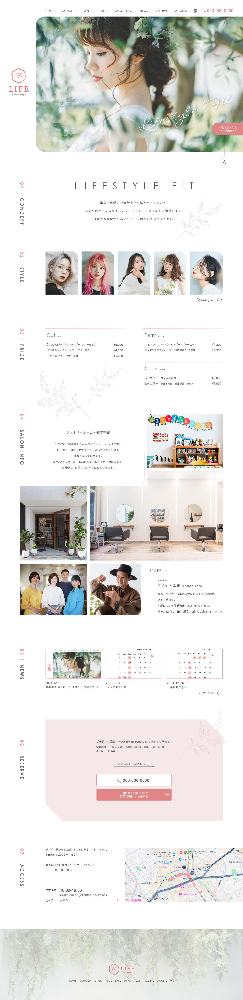

Works

Web site Design
美容室 「LIFE hair design」 LP (仮想)

- 作品概要
- 制作範囲
- 制作期間
- 使用ソフト
- 開業10周年を機会にwebサイトをリニューアル。 20代〜50代女性をメインのターゲットとし､認知向上・予約獲得が主な目的。
- 素材集め/デザイン
- 10日間
- Illustrator / Photoshop
美容室の全体感が分かり、お店の雰囲気や人が感じられるサイトということで、外観や店内・スタイリストの写真を載せることで美容室の様子がイメージしやすいような写真を選びました。
また、コーポレートカラーのピンクを基調に彩度をおさえたピンクをアクセントに使用し、幅広い年代の女性をイメージしたシンプルで落ち着きのある印象に仕上げました。
予約獲得を目的としているため電話番号やWEB予約ボタンを各所に配置。営業日カレンダーや店舗からのお知らせを載せることで、より身近に感じられ、欲しい情報が得られるデザインを目指しました。

View All
パソコン版